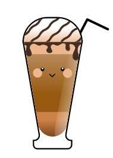

GLASS OF EMOTION
เครื่องดื่มสำหรับใจคุณตอนนี้

กาแฟ
ทำไมคุณถึงเหมาะกับ “กาแฟ”
กาแฟ
-
 คาเฟอีนในกาแฟยับยั้งการทำงานของแอดีโนซีน ซึ่งเป็นสารแห่งความเฉื่อย ทำให้สมองรู้สึกตื่นตัว
คาเฟอีนในกาแฟยับยั้งการทำงานของแอดีโนซีน ซึ่งเป็นสารแห่งความเฉื่อย ทำให้สมองรู้สึกตื่นตัว
-
เพิ่มการทำงานของสารแห่งความสุข ได้แก่
อะดรีนาลีน โดปามีน นอร์อิพิเนฟริน และเซโรโทนิน ทำให้รู้สึกกระปรี้กระเปร่า ลดความเศร้าได้
ท็อปปิงเพื่อดูแลใจ
ดาร์กช็อกโกแลต
-
ฟลาโวนอยด์ ช่วยลดปริมาณคอร์ติซอลในร่างกาย เสริมการทำงานของสมองและอารมณ์ให้ดีขึ้น
-
ทริปโตเฟน ช่วยสร้างเซโรโทนิน ทำให้อารมณ์ดีขึ้น ลดความวิตกกังวลที่อาจเกิดขึ้นจากความเหงาได้
-
ฟีนิลอะลานิน กระตุ้นการปล่อยเอนดอร์ฟิน ซึ่งเป็นสารแห่งความสุขและความพอใจ
ข้อควรระวัง !
หากดื่มกาแฟมากเกินไป โดยเฉลี่ยแล้วไม่ควรดื่มเกิน 3-4 แก้วต่อวัน อาจทำให้รู้สึกใจสั่นได้โดยเฉพาะคนที่ไวต่อคาเฟอีน

สำรวจความรู้สึกของคุณกัน!
ชั้นความรู้สึกของคุณ
รู้สึกเสียใจ
มักมาพร้อมการร้องไห้ เก็บตัว และขาดพลังใจ
รู้สึกเหงา
ความโดดเดี่ยวลึก ๆ ที่อยากมีใครสักคนอยู่ด้วย
รู้สึกโดดเดี่ยว
เหมือนตัวเอง
ห่างจากคนอื่น
รู้สึกถูกทอดทิ้ง
เหมือนไม่ได้รับความสนใจจากใครบางคน
วิธีรับมือและโอบกอดความรู้สึกนี้
- พูดระบายความรู้สึกกับครอบครัว เพื่อน หรือคนที่ไว้ใจได้ ช่วยให้ใจเบาสบายขึ้น
- ปล่อยให้ตัวเองร้องไห้ เมื่อเจ็บปวดหรือเศร้า
จะช่วยระบายอารมณ์ลบและฟื้นสมดุลใจ - ลองลุกขึ้นไปเดินเล่น หรือออกไปสูดอากาศ ความคิดจะสดใสและอารมณ์ดีขึ้นทันที
- ใช้คำคมหรือหลักคิดดี ๆ ปลอบใจตัวเอง เมื่อไม่ถึงเป้าหมาย เพื่อบรรเทาความผิดหวังและฟื้นกำลังใจ
“It takes strength to make your way through grief, to grab hold of life and let it pull you forward.”
- Patti Davis
- Patti Davis